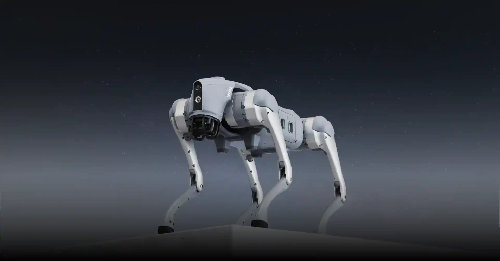
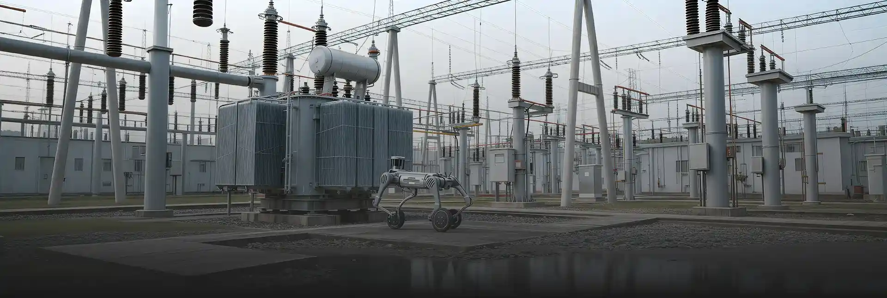
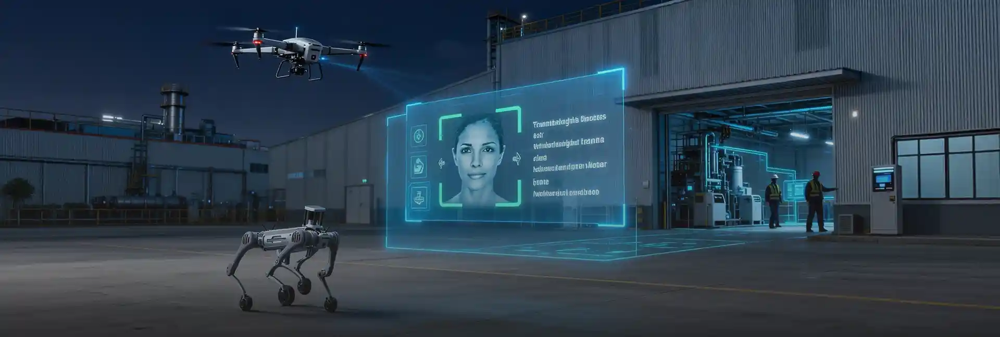
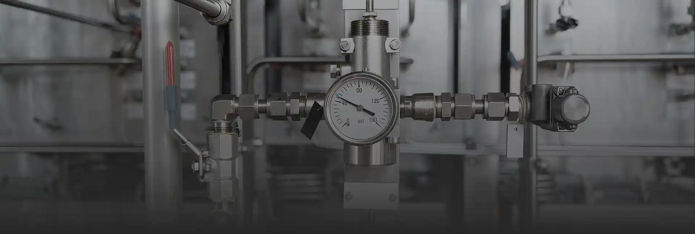
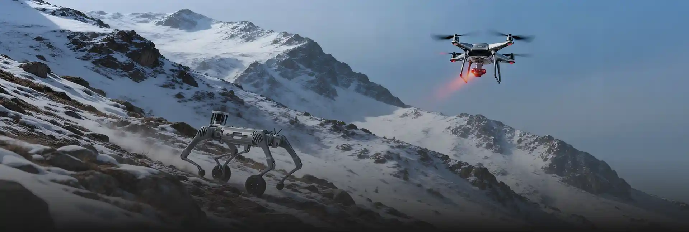
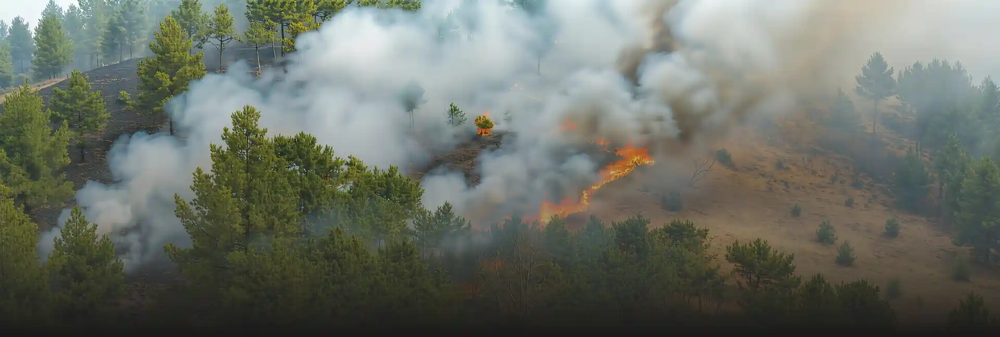
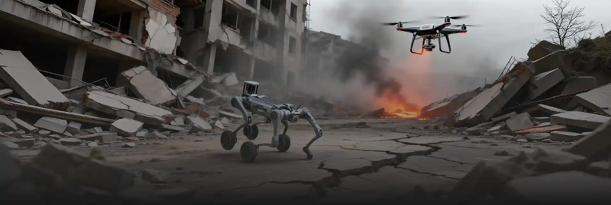
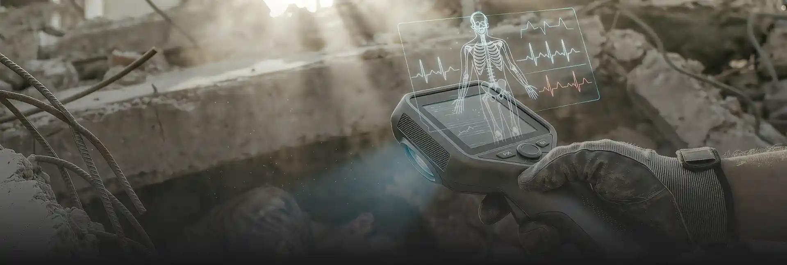
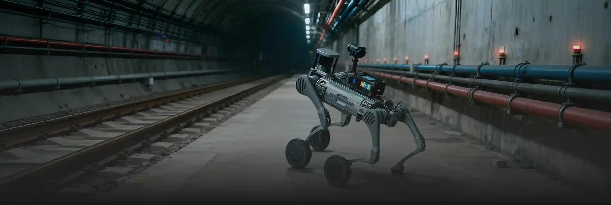

中文
English
日本語

多场景应用 · 专业解决方案 · 安全可靠
矿业集团、化工矿、能源企业、安全生产监管单位
针对变电站的24小时智能巡检服务，机器人可自主巡检设备状态、温度监测、异常声音识别。

机械狗进入狭窄空间，携带AI识别摄像头检测裂缝、渗漏。
AI无死角巡检矿区上空，机械狗低底地面，AI比对识别异常设备或人员闯入。

AI识别仪表读数，气体浓度异常，自动上报控制中心。

森林消防、登山救援协会、户外应急中心
无人机利用红外视觉锁定热源，机械狗穿越复杂地形靠近目标。

无人机部署中继节点，为偏远地区搜救提供通信支持。
AI识别烟雾、火点、风向趋势，自动触发预警。

复杂地貌下的自动化物资输送与遇险人员生命线牵引。
应急管理署、消防救援总队、武警部队城市管理局
地震、山体滑坡、洪水、雪崩等情况下，AI通过图像识别定位被困人员;无人机在空中扫描热源、机械狗在废墟中近地搜寻。

AI系统将无人机与机械狗的实时视讯流、位置数据、环境数据汇总到指挥中心，实现“空地一体”态势可视化。
结合红外热成像、激光雷达低照度视觉识别完成夜间搜救。
结合红外热成像、激光雷达低照度视觉识别完成夜间搜救。
森林消防、登山救援协会、户外应急中心
空间敌我目标、无人机实时回传画面，机械狗隐蔽近距观察。

空地联动实现战地物资补给。
AI识别烟雾、火点、风向趋势，自动触发预警。
无人机完成区域扫描，AI重建三维场景用于战术规划。
红十字会、医疗应急中心、山区医院
AI调度无人机+机械狗混合队伍进行自动化运送。
AI识别伤情，匹配医务人员指导现场急救。
AI识别人员形态、体温、心率等感器数据，判断存活可能。

消防支队、城市安防中心、工业园区安全办
机械狗带气体传感器、温度传感器进入危险区域替代人类侦查。
AI三维重建现场结构，辅助判断受困者可能位置。
AI识别烟雾、火点、风向趋势，自动触发预警。
在地铁、地下管廊中进行结构形变检测和隐患巡检。

为您的行业定制专业的安防巡检解决方案
联系我们